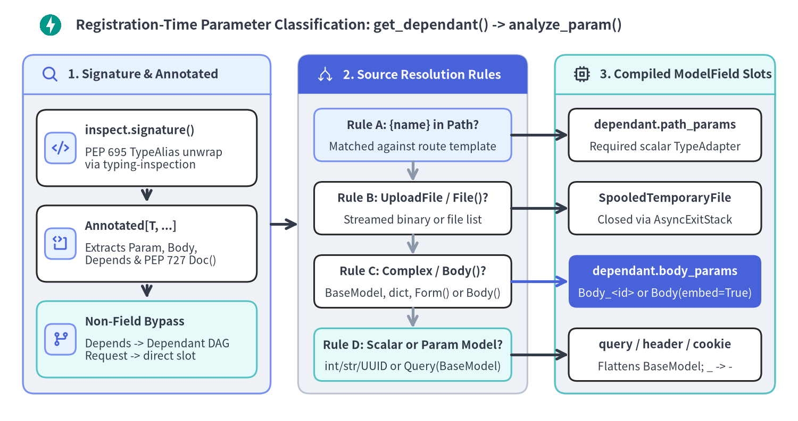
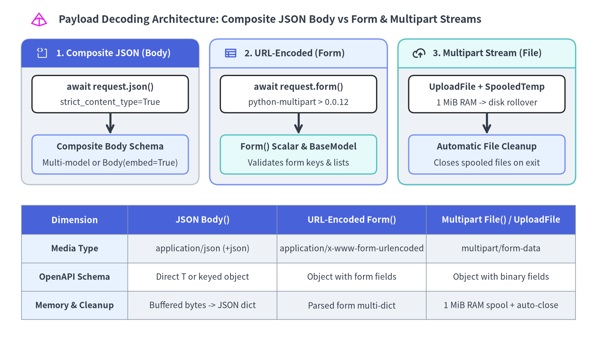

Path, Query, Header, Cookie & Body Validation
FastAPI compiles Python type annotations, Annotated[T, ...] metadata, and Pydantic v2 models at route registration time into pre-built Dependant trees and Rust-backed ModelField validators, eliminating per-request signature reflection while unifying validation and OpenAPI 3.1 schema generation.

Source Code
from drawlib.canvas import save, setup
from drawlib.icons import code, phosphor
from drawlib.lines import line, lines
from drawlib.shapes import rectangle
from drawlib.smartarts import CardList, Panel
from drawlib.styles import Styles
from drawlib.text import text
setup(width=174, height=92, dpi=150)
# Title Banner
code.fastapi((11, 86.5), width=5.2, style=Styles.Primary)
text(
(16.5, 86.5),
"Registration-Time Parameter Classification: get_dependant() -> analyze_param()",
style=Styles.DarkBold.patch(text_size=12.5, halign="left"),
)
# 1. Left Panel: Signature & Annotated Unpacking
p1 = Panel(
"1. Signature & Annotated",
style=Styles.Neutral,
header_style=Styles.PrimaryNeutral,
text_style=Styles.DarkBold.patch(text_size=11.0),
icon=phosphor.magnifying_glass,
icon_style=Styles.PrimaryBold,
header_height=8.5,
)
p1.draw((5, 6), width=54, height=74)
c1_xy, c1_w, c1_h = p1.get_content_box((5, 6), width=54, height=74, padding=(3.0, 3.5))
cl1 = CardList(
style=Styles.White,
text_style=Styles.DarkBold.patch(text_size=10.5),
description_style=Styles.Dark.patch(text_size=10.0),
badge_shape="rounded_rect",
badge_style=Styles.PrimaryNeutral,
icon_style=Styles.PrimaryBold,
direction="vertical",
spacing=3.5,
show_arrows=True,
arrow_style=Styles.DarkBold,
)
cl1.add(
"inspect.signature()",
"PEP 695 TypeAlias unwrap\nvia typing-inspection",
icon=phosphor.code,
)
cl1.add(
"Annotated[T, ...]",
"Extracts Param, Body,\nDepends & PEP 727 Doc()",
icon=phosphor.code_block,
)
cl1.add(
"Non-Field Bypass",
"Depends -> Dependant DAG\nRequest -> direct slot",
icon=phosphor.git_branch,
style=Styles.SecondaryNeutral,
)
cl1.draw(c1_xy, width=c1_w, height=c1_h)
# Connector from Panel 1 to Panel 2 (6.0 units)
line((59, 43), (65, 43), arrow_head="->", style=Styles.DarkBold)
# 2. Center Panel: 4-Stage Inference & Routing
p2 = Panel(
"2. Source Resolution Rules",
style=Styles.Neutral,
header_style=Styles.PrimaryFlat,
text_style=Styles.WhiteBold.patch(text_size=11.0),
icon=phosphor.arrows_split,
icon_style=Styles.White,
header_height=8.5,
)
p2.draw((65, 6), width=50, height=74)
gates = [
(62.5, "Rule A: {name} in Path?", "Matched against route template", Styles.PrimaryNeutral),
(46.5, "Rule B: UploadFile / File()?", "Streamed binary or file list", Styles.White),
(30.5, "Rule C: Complex / Body()?", "BaseModel, dict, Form() or Body()", Styles.White),
(14.5, "Rule D: Scalar or Param Model?", "int/str/UUID or Query(BaseModel)", Styles.SecondaryNeutral),
]
for idx, (gy, gtitle, gsub, gst) in enumerate(gates):
rectangle((90, gy), width=43, height=11.5, style=gst.patch(shape_r=1.8))
text((90, gy + 2.2), gtitle, style=Styles.DarkBold.patch(text_size=10.5))
text((90, gy - 2.6), gsub, style=Styles.Dark.patch(text_size=10.0))
if idx < len(gates) - 1:
next_gy = gates[idx + 1][0]
line((90, gy - 5.8), (90, next_gy + 5.8), arrow_head="->", style=Styles.MutedBold)
# 3. Right Panel: Compiled ModelField Targets
p3 = Panel(
"3. Compiled ModelField Slots",
style=Styles.Neutral,
header_style=Styles.SecondaryNeutral,
text_style=Styles.DarkBold.patch(text_size=11.0),
icon=phosphor.cpu,
icon_style=Styles.DarkBold,
header_height=8.5,
)
p3.draw((121, 6), width=48, height=74)
targets = [
(62.5, "dependant.path_params", "Required scalar TypeAdapter", Styles.White, False),
(46.5, "SpooledTemporaryFile", "Closed via AsyncExitStack", Styles.White, False),
(30.5, "dependant.body_params", "Body_<id> or Body(embed=True)", Styles.PrimaryFlat, True),
(14.5, "query / header / cookie", "Flattens BaseModel; _ -> -", Styles.White, False),
]
for (ty, ttitle, tsub, tst, is_focal) in targets:
rectangle((145, ty), width=42, height=11.5, style=tst.patch(shape_r=1.8))
t_head = Styles.WhiteBold if is_focal else Styles.DarkBold
t_body = Styles.White if is_focal else Styles.Dark
text((145, ty + 2.2), ttitle, style=t_head.patch(text_size=10.5))
text((145, ty - 2.6), tsub, style=t_body.patch(text_size=10.0))
lines([(111.5, ty), (124.0, ty)], arrow_head="->", style=Styles.PrimaryBold if is_focal else Styles.DarkBold)
save()
Every HTTP endpoint and dependency callable in FastAPI passes through get_dependant() once when the router registers the path operation, transforming declarative Python type hints into deterministic runtime extractors.
1. Registration-Time Parameter Classification (analyze_param)
Inside fastapi/dependencies/utils.py, get_dependant() resolves forward references via get_typed_signature(), extracts {param} placeholders from the route path with get_path_param_names(), and delegates each parameter to analyze_param():
- PEP 695 &
AnnotatedUnpacking: FastAPI checksis_typealiastype(annotation)(fromtyping-inspection) to unwrap Python 3.12+type MyParam = Annotated[...]aliases, then inspectsAnnotated[T, ...]arguments. FastAPI-specific markers (Param,Body,Depends,Security) are copied viacopy_field_info()alongside PydanticFieldconstraints and PEP 727Doc()documentation strings. When usingAnnotated, default values must be assigned with standard Python= defaultsyntax outsideAnnotated. - Framework & Dependency Bypass: Sub-dependencies (
Depends/Security) recurse into childDependantnodes, while framework types (Request,Response,BackgroundTasks,WebSocket,HTTPConnection,SecurityScopes) bind directly to named slots onDependantviaadd_non_field_param_to_dependency()without creating validation fields. - Deterministic 4-Rule Inference: When no explicit
Query(),Body(), orDepends()marker is present,analyze_param()classifies the parameter strictly by position and underlying type:
| Priority | Match Condition in analyze_param() |
Inferred Marker | Target Dependant Bucket |
|---|---|---|---|
| 1 | Parameter name matches {param} in route path |
Path() |
dependant.path_params (always required, scalar only) |
| 2 | Annotation is UploadFile or sequence of UploadFile |
File() |
dependant.body_params (multipart/form-data) |
| 3 | Non-scalar (BaseModel, Mapping, dataclass, list[Model]) |
Body() |
dependant.body_params (application/json) |
| 4 | Scalar or sequence of scalars (int, str, UUID, list[str]) |
Query() |
dependant.query_params |
- Header Normalization & Structured
ParamModels:Header(convert_underscores=True)automatically translates Pythonicsnake_caseparameter names (such asx_trace_id) into standard HTTP hyphenated headers (x-trace-id). Furthermore, annotating a PydanticBaseModelwithQuery(),Header(), orCookie()(Annotated[FilterModel, Query()]) instructs_get_param_model()to flatten individual fields into OpenAPI parameters while running full model-level validation—includingConfigDict(extra="forbid")—duringrequest_params_to_args().
Multi-Source Parameter Extraction & Query Filter Models
The following verified endpoint combines a Path constraint, a structured Pydantic Query() filter model that rejects undeclared query keys, automatic Header underscore-to-hyphen conversion, and a typed Cookie default:
from typing import Annotated, Literal
from annotated_doc import Doc
from fastapi import Cookie, FastAPI, Header, Path, Query
from pydantic import BaseModel, ConfigDict, Field
app = FastAPI(title="Catalog Service", version="1.0.0")
class CatalogFilterParams(BaseModel):
model_config = ConfigDict(extra="forbid")
limit: int = Field(20, ge=1, le=100, description="Maximum items per page")
offset: int = Field(0, ge=0, description="Zero-based pagination offset")
sort_by: Literal["created_at", "price_cents"] = "created_at"
tags: list[str] = []
@app.get("/catalog/{item_id}")
async def get_catalog_item(
item_id: Annotated[
int,
Path(ge=1, description="Positive catalog item ID"),
Doc("Unique numeric identifier matched from the URL path template."),
],
filters: Annotated[
CatalogFilterParams,
Query(),
Doc("Structured query filter model forbidding undeclared query keys."),
],
x_trace_id: Annotated[
str,
Header(min_length=8, description="Distributed trace correlation header"),
Doc("Automatically converted from x_trace_id to x-trace-id."),
],
preferred_currency: Annotated[
Literal["USD", "EUR", "JPY"],
Cookie(description="ISO-4217 display currency preference"),
] = "USD",
) -> dict[str, object]:
return {
"item_id": item_id,
"filters": filters.model_dump(),
"trace_id": x_trace_id,
"currency": preferred_currency,
}
At runtime, solve_dependencies() extracts path, query, header, and cookie values concurrently into a single error collector; if any constraint fails (such as item_id=0 or an unexpected ?debug=1 query key), FastAPI aggregates every location-prefixed error (("query", "debug"), ("path", "item_id")) into a single RequestValidationError (422 Unprocessable Content).
2. Composite JSON Bodies, Form Data & Multipart Streams
When a route or its dependencies declare one or more body parameters, _populate_api_route_state() evaluates _should_embed_body_fields() and _get_body_field() to determine how the HTTP payload is parsed, validated, and represented in OpenAPI:
- Direct vs. Synthetic Composite
BodyModels: A single PydanticBaseModelparameter withoutembed=Truemaps directly to the root JSON object (loc=("body",)). Whenever multipleBodyparameters exist—or whenBody(embed=True)is set on a single parameter—_get_body_field()callscreate_body_model()to synthesize aBody_<route.unique_id>schema wrapping each parameter under its own top-level JSON key. By default (strict_content_type=True),get_request_handler()verifies anapplication/json(orapplication/*+json)Content-Typeheader before decoding JSON bytes. - URL-Encoded
Form()& MultipartUploadFileLifecycles: DeclaringForm()orFile()triggersensure_multipart_is_installed()(python-multipart > 0.0.12) at startup. During request handling,body = await request.form()parses form fields and wraps uploaded files in StarletteUploadFileobjects backed bySpooledTemporaryFile(buffered in RAM up to 1 MiB before spooling to disk). FastAPI immediately registersfile_stack.push_async_callback(body.close)onAsyncExitStackMiddleware(scope["fastapi_middleware_astack"]), guaranteeing that temporary file descriptors are closed after the response finishes or raises.

Source Code
from drawlib.canvas import save, setup
from drawlib.icons import code, phosphor
from drawlib.lines import line
from drawlib.shapes import rectangle
from drawlib.smartarts import Panel, Table
from drawlib.styles import Colors, Styles
from drawlib.text import text
setup(width=168, height=96, dpi=150)
# Title Banner
code.pydantic((11, 90.5), width=5.0, style=Styles.Primary)
text(
(16.5, 90.5),
"Payload Decoding Architecture: Composite JSON Body vs Form & Multipart Streams",
style=Styles.DarkBold.patch(text_size=12.5, halign="left"),
)
# Top 3 Architecture Lanes
lanes = [
(
6,
"1. Composite JSON (Body)",
Styles.PrimaryFlat,
Styles.WhiteBold,
phosphor.code_block,
Styles.White,
"await request.json()",
"strict_content_type=True",
"Body_<unique_id> Envelope",
"Multi-model or Body(embed=True)",
Styles.PrimaryNeutral,
),
(
59,
"2. URL-Encoded (Form)",
Styles.PrimaryNeutral,
Styles.DarkBold,
phosphor.table,
Styles.PrimaryBold,
"await request.form()",
"python-multipart > 0.0.12",
"Form() Scalar & BaseModel",
"_extract_form_body() mapping",
Styles.SecondaryNeutral,
),
(
112,
"3. Multipart Stream (File)",
Styles.SecondaryNeutral,
Styles.DarkBold,
phosphor.cloud_arrow_up,
Styles.DarkBold,
"UploadFile + SpooledTemp",
"1 MiB RAM -> disk rollover",
"AsyncExitStackMiddleware",
"push_async_callback(body.close)",
Styles.PrimaryNeutral,
),
]
for lx, ltitle, hstyle, htxt, licon, icostyle, top1, top2, bot1, bot2, botstyle in lanes:
p = Panel(
ltitle,
style=Styles.Neutral,
header_style=hstyle,
text_style=htxt.patch(text_size=10.8),
icon=licon,
icon_style=icostyle,
header_height=8.0,
)
p.draw((lx, 44), width=50, height=41)
cx = lx + 25
rectangle((cx, 69.5), width=44, height=10.5, style=Styles.White.patch(shape_r=1.6))
text((cx, 71.5), top1, style=Styles.DarkBold.patch(text_size=10.5))
text((cx, 67.2), top2, style=Styles.Dark.patch(text_size=10.0))
line((cx, 64.2), (cx, 58.2), arrow_head="->", style=Styles.DarkBold)
rectangle((cx, 52.5), width=44, height=11.0, style=botstyle.patch(shape_r=1.6))
text((cx, 54.7), bot1, style=Styles.DarkBold.patch(text_size=10.5))
text((cx, 50.1), bot2, style=Styles.Dark.patch(text_size=10.0))
# Bottom Comparison Matrix Table
matrix = Table(
cell_style=Styles.White,
text_style=Styles.Dark.patch(text_size=10.0),
header_cell_style=Styles.PrimaryFlat,
header_text_style=Styles.WhiteBold.patch(text_size=10.5),
border_style=Styles.MutedThin,
)
matrix.set_style_cell_evenodd(
Colors.White,
Styles.Dark.patch(text_size=10.0),
Styles.Neutral.shape_fill_color,
Styles.Dark.patch(text_size=10.0),
)
matrix.set_style_cell_rowheader(
Styles.PrimaryNeutral.shape_fill_color,
Styles.DarkBold.patch(text_size=10.2),
)
matrix.set_style_cell_header(
Styles.PrimaryFlat.shape_fill_color,
Styles.WhiteBold.patch(text_size=10.5),
)
matrix.draw_flexible(
xy=(6, 6),
column_widths=[30.0, 42.0, 42.0, 42.0],
row_heights=[8.2, 8.0, 8.0, 8.0],
data=[
["Dimension", "JSON Body()", "URL-Encoded Form()", "Multipart File() / UploadFile"],
["Media Type", "application/json (+json)", "application/x-www-form-urlencoded", "multipart/form-data"],
["OpenAPI Schema", "Direct T or Body_<route_id>", "Body_<route_id> (form props)", "Body_<route_id> (binary str)"],
["Memory & Cleanup", "Buffered bytes -> JSON dict", "FormData ImmutableMultiDict", "1 MiB RAM spool + ExitStack"],
],
align="bottom_left",
)
save()
Composite Body Envelopes, Body(embed=True) & PEP 727 Doc()
Combining multiple Pydantic models alongside scalar Body() fields in a single endpoint automatically produces a keyed JSON envelope, while Body(embed=True) enforces that same keyed structure even when only a single model parameter is present:
from typing import Annotated
from annotated_doc import Doc
from fastapi import Body, FastAPI, Path
from pydantic import BaseModel, Field
app = FastAPI(title="Order Fulfillment API", version="1.0.0")
class OrderLine(BaseModel):
sku: Annotated[str, Field(pattern=r"^SKU-[A-Z0-9]{4}$"), Doc("Warehouse SKU")]
quantity: Annotated[int, Field(ge=1, le=500), Doc("Units requested")]
class AuditContext(BaseModel):
actor_id: Annotated[str, Field(min_length=3), Doc("Authenticated operator ID")]
reason: Annotated[str, Field(min_length=5), Doc("Audit trail justification")]
@app.put("/orders/{order_id}")
async def replace_order(
order_id: Annotated[str, Path(pattern=r"^ord_[0-9]+$")],
line: Annotated[OrderLine, Doc("Primary line-item payload")],
audit: Annotated[AuditContext, Doc("Mandatory audit metadata")],
priority: Annotated[
int,
Body(ge=1, le=5, description="Dispatch priority tier (1=low, 5=urgent)"),
Doc("Scalar body attribute merged into synthetic Body model"),
] = 3,
) -> dict[str, object]:
return {
"order_id": order_id,
"sku": line.sku,
"quantity": line.quantity,
"actor_id": audit.actor_id,
"priority": priority,
}
@app.post("/orders/quote")
async def quote_single_embedded_body(
line: Annotated[
OrderLine,
Body(embed=True),
Doc("Forces single BaseModel under top-level {'line': {...}} key"),
],
) -> dict[str, object]:
return {"sku": line.sku, "estimated_cents": line.quantity * 2500}
Hardened Multipart Form & Asynchronous UploadFile Streaming
Because Form() and File() share the multipart body parser, an endpoint can validate structured form fields alongside streamed UploadFile uploads—while enforcing strict MIME allow-lists, byte caps (await file.read(MAX + 1)), magic-byte verification, and server-generated storage keys rather than trusting client-supplied filenames:
from typing import Annotated, Literal
from uuid import uuid4
from fastapi import FastAPI, File, Form, HTTPException, UploadFile, status
app = FastAPI(title="Document Vault API", version="1.0.0")
ALLOWED_MEDIA_TYPES = {"application/pdf": b"%PDF-", "image/png": b"\x89PNG"}
MAX_UPLOAD_BYTES = 1024 * 1024 # 1 MiB ceiling
@app.post("/documents/upload", status_code=status.HTTP_201_CREATED)
async def upload_document(
category: Annotated[Literal["invoice", "contract"], Form()],
file: Annotated[UploadFile, File(description="PDF or PNG document")],
description: Annotated[str, Form(max_length=120)] = "",
) -> dict[str, object]:
expected_magic = ALLOWED_MEDIA_TYPES.get(file.content_type or "")
if expected_magic is None:
raise HTTPException(
status_code=status.HTTP_415_UNSUPPORTED_MEDIA_TYPE,
detail="Only application/pdf and image/png are permitted",
)
payload = await file.read(MAX_UPLOAD_BYTES + 1)
if len(payload) > MAX_UPLOAD_BYTES:
raise HTTPException(
status_code=status.HTTP_413_CONTENT_TOO_LARGE,
detail="Uploaded file exceeds 1 MiB limit",
)
if not payload.startswith(expected_magic):
raise HTTPException(
status_code=status.HTTP_400_BAD_REQUEST,
detail="File header magic bytes do not match declared Content-Type",
)
# Never trust client-controlled file.filename for filesystem or object keys
storage_key = f"{category}/{uuid4().hex}"
return {
"storage_key": storage_key,
"content_type": file.content_type,
"size_bytes": len(payload),
"description": description,
}
Once inbound parameters and payloads are validated, FastAPI hands the return value to its outbound serialization and schema engine—covered next in Response Serialization & OpenAPI 3.1, with deeper dependency graph mechanics in Dependant DAG, Caching & Scopes.